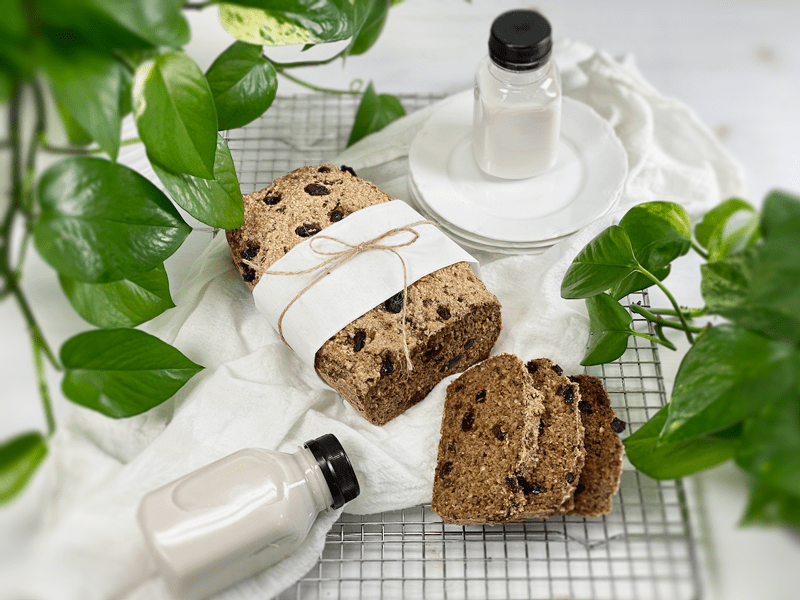
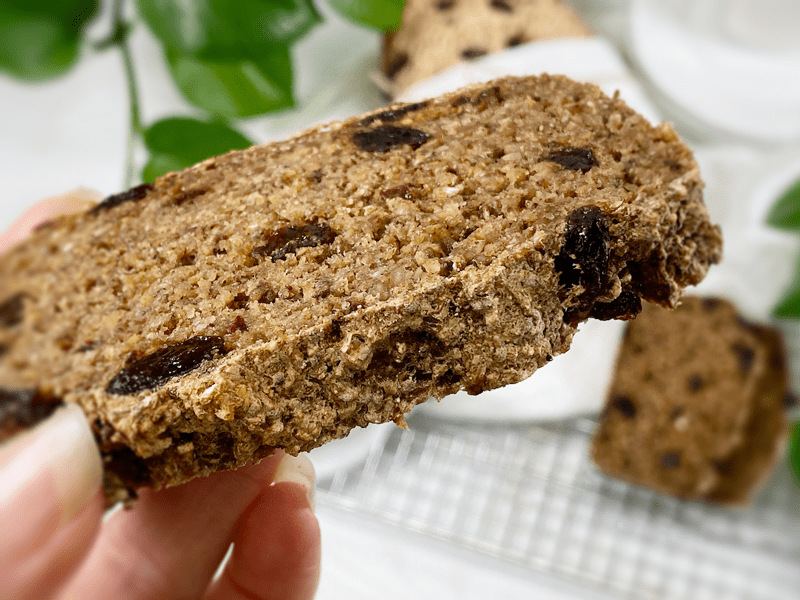
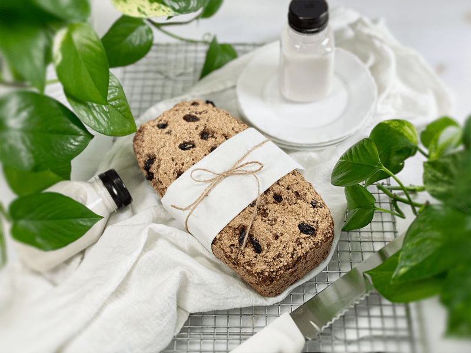
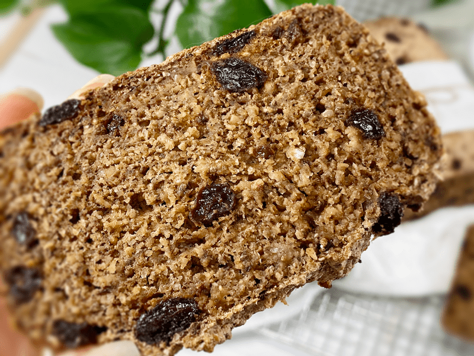

Cinnamon Raisin Bread | Cooked | Gluten-Free | Oil-Free | Yeast-Free | Nut-Free
I have been on a bread, donut, and muffin kick lately, so you will just have to bear with me. Actually, truth be told, it’s all Bob’s fault. With each bread-like recipe I created, he kept eating them up and asking for more. And who am I to deny this sweet, loving man who supports and encourages all the things I do in life? But we are not here to talk about Bob…we are here to talk about this wonderfully moist cinnamon and raisin bread.

My goal for this bread was to not only make it vegan and gluten-free but as low in sugar as possible without sacrificing the raisins, since this IS raisin bread, after all. To disperse the sweetness a bit more into the bread, I added 1/2 cup of raisins to the batter and pulsed it into small bits so the flavor would spread more evenly. I then hand-mixed in another 1/2 cup of raisins so that we could still enjoy the plump pockets of sweetness that everyone is familiar with when it comes to raisin bread. Mission accomplished.

This bread tastes downright delicious! No need for “butters,” jams, or spreads. It also comforts the soul once nicely toasted, as it warms each juicy raisin, creating a soft inside with a crunchy exterior. When I bake bread I like to slice it, once cooled, and then freeze it in tightly wrapped sections of 4 slices. I slip them into a cambro or zip-lock bag, label, and pop it in the freezer. This way, we can be assured that it won’t go stale or bad. And the only reason that would even happen is that I am always working on new recipes, so it can be challenging to eat it all before it expires.

Ready for a close-up? I used to find it unnerving to follow other people’s recipes, especially if they weren’t around to ask questions. Did mine turn out like theirs? What texture did their recipe yield? Is mine undercooked? Overcooked? I was always second-guessing my cooking abilities. Because of that, I try to remember to take close-up photos so you can have an idea of how the item should look. Now, if I could only turn these photos into scratch n’ sniff stickers!

You may read through the ingredient list and think, “Hmm, I wonder if I could substitute out _____ for ____?” Let me explain why I choose the ingredients that I did. Once you understand the purpose of each ingredient, you can better decide whether to replace an item.
Buckwheat and Rolled Oats
- To make this bread from whole foods, I chose to skip calorie-dense flours. Instead of buckwheat flour, I used the whole raw kernels, and instead of oat flour, I used gluten-free rolled oats. I do not recommend replacing these whole food forms with flours, as it will make the bread denser.
- Side Note: I am all about soaking nuts, seeds, and grains since the process helps reduce phytic acid/enzyme inhibitors. But for this recipe, I soaked only the buckwheat. I tried soaking the oats, and the end product turned out gummy inside.
- Possible Buckwheat Substitution: You could use quinoa in place of the buckwheat. Do not use quinoa flour, but the whole grain instead. Be sure to soak and rinse it really well before adding it to the recipe.
Psyllium Husks
- Psyllium is used to retain moisture and to help the bread from becoming crumbly. It is also one of the key ingredients that give this bread that typical bread-like texture that we all crave.
- Side Note: Psyllium husks are also used to increase bulk in your stool, an effect that helps to cause movement of the intestines. It also works by increasing the amount of water in the stool, making the stool softer and easier to pass.
- Possible Psyllium Substitution: This recipe calls for a 1/4 cup of psyllium husk; you can try 1/4 cup of ground flax seeds. It’s not an exact replacement but close enough.
Chia Seeds
- To make this a vegan recipe (as all mine are), chia seeds are used instead of eggs.
- Using chia seeds is a great way to add extra nutrients, especially fiber and protein.
- Possible Chia Seed Substitution: You could use the same measurement of ground flax seeds. Unlike chia seeds, flax seeds need to be ground down in order for our bodies to absorb the nutrients. **If you are replacing the psyllium husks with flax seeds, I don’t recommend using the flax as a replacement for the chia seeds, as the double dose of flax could make the bread gummy.
Applesauce
- Baking with applesauce instead of oil adds fiber and reduces calories. Because of its water content, applesauce will also keep the bread moist and fresh longer.
- Possible Substitution: Equal exchange with ripe banana, mashed sweet potatoes, or plant-based yogurt. This will alter the flavor of the bread a little bit but that won’t necessarily be a bad thing.
I hope you found this information helpful and you give the bread a try. Please leave a comment below. blessings and love, amie sue
 Ingredients
Ingredients
Yields 1 (3 3/4″ x 8 3/4″) pan – roughly 12 slices
- 1 cup raw whole buckwheat kernels, soaked
- 1 1/2 cups gluten-free rolled oats, not soaked
- 1/4 cup chia seeds
- 1/4 cup psyllium husks (not powder)
- 5 tsp Ceylon cinnamon
- 1 tsp sea salt
- 1 1/2 cups water
- 1/4 cup unsweetened applesauce
- 1/2 tsp liquid NuNaturals stevia
- 1 tsp aluminum-free baking powder
- 1/2 tsp baking soda
- 1/2 cup raisins (blend in) soaked in water
- 1/2 cup raisins (hand-mix in)
Preparation
Soaking the Buckwheat
- Place the buckwheat in a glass or stainless steel bowl, and cover with double the amount of water.
- Add 2 Tbsp raw apple cider vinegar, stir, and cover with a clean dishtowel.
- Let it sit on the counter for 30 minutes to 4 hours.
- Once ready to use, drain and rinse before adding to the food processor.
Mixing and Baking
- Preheat oven to 350 degrees (F) and prepare your baking pan.
- I am baking the bread in silicone pans; therefore I don’t need any oil or parchment paper. One tip when using silicone pans is to place them on a baking sheet before loading and transporting them to the oven. Since they are soft and flexible, they can be challenging to handle once full.
- If you use any other type of pan, I recommend lining it with parchment paper so the bread doesn’t stick.
- Add the rolled oats, chia seeds, psyllium husks (not powder), cinnamon, applesauce, stevia, water, 1/2 cup raisins, and salt to the food processor (along with the buckwheat). Process for a full 30-60 seconds.
- Add the baking powder and baking soda, process 10 seconds, and immediately pour into the pan and bake for 1 hour.
- Hand mix in the remaining 1/2 cup of whole raisins.
- Pour the batter into the bread loaf pan and slide into the oven for roughly 50-60 minutes.
- At the 50 minute mark, test the doneness with a toothpick.
- Once done baking, remove the pan and dump the bread onto a cooling rack. Do not keep it in the pan, or it can become soggy-bottomed.
- Cut once cooled, and enjoy!
Storage
- Once cooled, you can store in an airtight container on the counter for a couple of days, or in the fridge for around 5 days.
- It also freezes fantastically well and toasts up beautifully. Slice it before freezing and pull out individual pieces as you need for an easy, nourishing breakfast or lunch.
© AmieSue.com